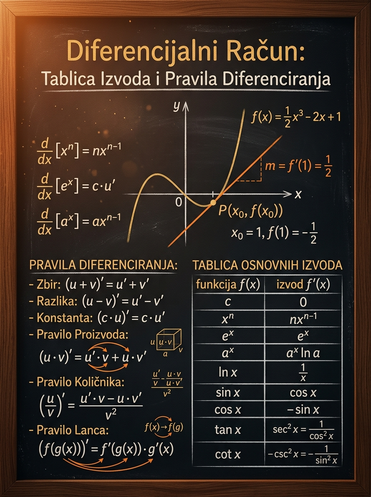

Da sigurno diferenciraš polinomske, racionalne, korenske, trigonometrijske, eksponencijalne i logaritamske funkcije, kao i njihove kombinacije.
Matoteka znanje · Lekcija 58
Diferencijalni račun Tablica izvoda i pravila diferenciranja
Ova lekcija je mesto gde izvod prestaje da bude apstraktna definicija i postaje alat koji moraš da koristiš brzo, tačno i bez panike. Za prijemni nije dovoljno da znaš šta je izvod; moraš da prepoznaš oblik funkcije i da bez greške aktiviraš pravo pravilo.
\[f'(x_0)=\lim_{h\to 0}\frac{f(x_0+h)-f(x_0)}{h}\]
\[(u\circ v)'(x)=u'(v(x))\cdot v'(x)\]
Da vidiš samo spoljašnji oblik funkcije, a zaboraviš unutrašnju funkciju. Upravo tu učenici najčešće izgube poene zbog izostavljenog faktora.
Najpre prepoznaj strukturu: zbir, proizvod, količnik ili složena funkcija. Tek tada piši izvod. Redosled razmišljanja je važniji od brzine ruke.

Zašto je ova lekcija važna
Izvod je osovina cele matematičke analize
Na prijemnom se izvod retko pojavljuje samo kao izolovana tehnika. U većini zadataka on je prvi korak ka nečemu većem: ispitivanju rasta i opadanja funkcije, nalaženju minimuma i maksimuma, pisanju jednačine tangente ili rešavanju optimizacionog problema.
Zato što pokušavaju da pamte formule kao nepovezanu listu. To kratko traje. Mnogo sigurniji pristup je sledeći: svaku funkciju posmatraj kao konstrukciju. Pitaj se da li je to zbir, proizvod, količnik ili funkcija unutar funkcije. Tek onda piši izvod.
- Tablica izvoda daje ti osnovne cigle.
- Pravila diferenciranja govore kako se te cigle kombinuju.
- Lančano pravilo ti spasava sve zadatke sa složenom funkcijom.
- Domena ne sme da se zaboravi, posebno kod korena i logaritma.
Već u sledećoj lekciji izvod postaje radni alat za monotonost, ekstreme i tangente. Ako ovde automatizuješ diferenciranje, kasnije možeš da se baviš idejom zadatka. Ako ovde trošiš svu energiju, nećeš imati prostora za ostatak rešenja.
- Ekstremne vrednosti traže tačan prvi izvod.
- Tangenta i normala traže vrednost izvoda u konkretnoj tački.
- Optimizacija u geometriji počinje dobrim modelovanjem i završava dobrim diferenciranjem.
- Na tehničkim prijemnim brzina je važna, ali samo kada je tačnost stabilna.
Ideja
Šta izvod zapravo meri
Pre nego što zapamtiš formule, važno je da razumeš značenje. Kada kažemo da je izvod funkcije u tački jednak broju \(5\), to znači da funkcija u vrlo maloj okolini te tačke raste približno pet jedinica po jednoj jedinici promene argumenta.
Intuicija
Izvod u tački meri lokalnu brzinu promene. Ako posmatraš graf funkcije, izvod je nagib tangente u toj tački. Pozitivan izvod znači da funkcija raste, negativan da opada, a nulti izvod često signalizira mogući ekstrem ili horizontalnu tangentu.
\[
f'(x_0)=\lim_{h\to 0}\frac{f(x_0+h)-f(x_0)}{h}
\]
Ova formula dolazi iz limesa količnika priraštaja. Na prijemnom se izvod uglavnom neće tražiti preko definicije, ali je korisno da znaš odakle dolazi jer tada razumeš zašto izvod „gleda“ ponašanje funkcije u beskrajno maloj okolini tačke.
Ako je \(f'(x_0)=3\), tangenta u tački \(x_0\) ima nagib 3. To je geometrijsko značenje izvoda.
Izvod govori šta se dešava „tu i odmah“, ne nužno na celom intervalu. Zato kasnije ispitujemo znak izvoda po intervalima.
Kada dobiješ tačan izvod, možeš da nalaziš ekstreme, tangente, monotonost i mnoge realne maksimum/minimum zadatke.
Nemoj sebi govoriti: „Moram da znam formulu.“ Reci sebi: „Moram da prepoznam od čega je funkcija sastavljena.“ To je mentalni zaokret koji diferenciranje čini stabilnim.
Funkcija može biti definisana u nekoj tački, a da u toj tački nema izvod. Kod korena, apsolutne vrednosti ili komadno zadanih funkcija uvek gledaj i domen i oblik grafa.
Ključne formule
Tablica osnovnih izvoda koju moraš da prepoznaš na prvi pogled
Ne moraš sve da učiš istim tempom. Počni od osnovnih obrazaca koje najčešće srećeš, a zatim ih proširi na trigonometrijske, eksponencijalne i logaritamske funkcije. Bitno je da svaku formulu povežeš sa tipičnim oblikom funkcije.
Konstanta
\[(c)'=0\]
Konstanta se ne menja, pa joj je brzina promene nula. Zato je i izvod bilo kog slobodnog člana jednak nuli.
Stepena funkcija
\[(x^n)'=nx^{n-1}\]
Ovo je najvažnija formula u tablici. Važi za ceo broj \(n\), a uz odgovarajući domen koristi se i za racionalne stepene.
Obrnuta vrednost i koren
\[\left(\frac{1}{x}\right)'=-\frac{1}{x^2}, \qquad (\sqrt{x})'=\frac{1}{2\sqrt{x}}\]
Drugi obrazac je zapravo poseban slučaj stepena \(x^{-1}\), a treći stepena \(x^{1/2}\). Kod korena posebno vodi računa o domenu.
Eksponencijalne
\[(e^x)'=e^x,\qquad (a^x)'=a^x\ln a\]
Kod \(e^x\) funkcija je „sopstveni izvod“, dok kod \(a^x\) moraš dopisati faktor \(\ln a\).
Logaritamske
\[(\ln x)'=\frac{1}{x}, \qquad (\log_a x)'=\frac{1}{x\ln a}\]
Ove formule važe za \(x>0\). To nije sitnica, već obavezan uslov koji na prijemnom često odlučuje da li je rešenje potpuno.
Trigonometrijske
\[(\sin x)'=\cos x,\qquad (\cos x)'=-\sin x,\qquad (\tan x)'=\frac{1}{\cos^2 x}\]
Ovde je najčešća greška znak kod kosinusa i pogrešno pamćenje izvoda tangensa.
Grupiši formule po porodicama. Ako znaš stepeni oblik, onda su \(1/x\) i \(\sqrt{x}\) samo prepisani stepenski slučajevi. Tako pamtiš manje, a razumeš više.
Kada vidiš \(x^7\), moraš odmah videti \(7x^6\). Kada vidiš \(\sin x\), moraš odmah videti \(\cos x\). Tek tada mozak ostaje slobodan za složenija pravila.
Mikro-provera 1: Zašto je \((7)'=0\), a \((7x)'=7\)?
Zato što je \(7\) konstanta i ne menja se sa promenom \(x\), pa joj je izvod nula. Funkcija \(7x\) jeste linearna funkcija; kada \(x\) poraste za 1, vrednost funkcije poraste za 7, pa je izvod 7.
Mikro-provera 2: Zašto je izvod \(\sqrt{x}\) definisan samo za \(x>0\), a ne za \(x=0\)?
Funkcija \(\sqrt{x}\) jeste definisana za \(x\ge 0\), ali formula za izvod glasi \(\frac{1}{2\sqrt{x}}\), što na \(x=0\) nema smisla jer bi imenilac bio nula. Zato izvod ne postoji u nuli.
Mehanika rada
Pravila diferenciranja: kako iz osnovnih izvoda prelaziš na realne zadatke
Tablica nije dovoljna sama po sebi, jer se u zadacima funkcije skoro nikada ne pojavljuju „same“. One su sabrane, pomnožene, podeljene ili umetnute jedna u drugu. Tu stupaju na scenu pravila diferenciranja.
Linearnost
\[(cu\pm dv)'=cu'\pm dv'\]
Izvod razlivaš preko zbira i razlike, a konstanta ostaje ispred. Ovo je razlog zašto polinome diferenciraš član po član.
\[\bigl(5x^4-2x+7\bigr)'=20x^3-2\]
Proizvod
\[(uv)'=u'v+uv'\]
Kada imaš umnožak dve funkcije, ne diferenciraš svaku pa samo pomnožiš. Moraš da napišeš oba člana iz formule.
\[(x^2\sin x)'=2x\sin x+x^2\cos x\]
Količnik
\[\left(\frac{u}{v}\right)'=\frac{u'v-uv'}{v^2}, \qquad v\ne 0\]
Obavezno pazi na redosled u brojniku: prvo \(u'v\), pa minus \(uv'\). Imenilac se kvadrira ceo.
\[\left(\frac{x^2+1}{x+2}\right)'=\frac{2x(x+2)-(x^2+1)}{(x+2)^2}\]
Pravilo lanca
\[(u\circ v)'(x)=u'(v(x))\cdot v'(x)\]
Najvažnije pitanje glasi: šta je spolja, a šta unutra? Spolja diferenciraš tako da unutrašnjost prepišeš, a zatim je na kraju množiš njenim izvodom.
\[\bigl(3x^2+1\bigr)^4{}'=4(3x^2+1)^3\cdot 6x\]
Višestruka kombinacija
\[\text{često koristiš više pravila u istom zadatku}\]
Na prijemnom su najčešći zadaci u kojima jedno pravilo nije dovoljno. Na primer, u količniku brojilac može biti složena funkcija ili proizvod.
\[\left(\frac{e^{2x}}{x^2+1}\right)'=\frac{2e^{2x}(x^2+1)-2xe^{2x}}{(x^2+1)^2}\]
Strategija
\[\text{oblik} \to \text{pravilo} \to \text{tablica} \to \text{kontrola}\]
Pre nego što kreneš da računaš, zastani dve sekunde i imenuj oblik. To skraćuje rešenje i drastično smanjuje broj grešaka.
\[\sin(2x^2-1)\;\Longrightarrow\;\text{složena funkcija}\]
- Ako je funkcija sabrana ili oduzeta po članovima, koristi linearnost.
- Ako vidiš dve funkcije koje se množe, aktiviraš pravilo proizvoda.
- Ako je zapis u obliku razlomka, razmišljaj o količniku.
- Ako je jedna funkcija „u stomaku“ druge, koristi pravilo lanca.
- Ako vidiš više slojeva, kreni spolja ka unutra, a zatim dodaj unutrašnji izvod.
Učenicima je najlakše da napišu privremenu smenu. Na primer, ako je \(f(x)=\sin(2x^2-1)\), zapiši \(t=2x^2-1\). Tada je \(f(x)=\sin t\), pa je \(f'(x)=\cos t\cdot t'\). Na kraju vrati \(t\).
- Spoljašnja funkcija: \(\sin t\)
- Unutrašnja funkcija: \(t=2x^2-1\)
- Izvod spolja: \(\cos t\)
- Izvod unutra: \(4x\)
- Konačno: \(f'(x)=4x\cos(2x^2-1)\)
Mikro-provera 3: Šta je unutrašnja funkcija u izrazu \(\ln(5x-3)\)?
Unutrašnja funkcija je \(5x-3\), a spoljašnja je \(\ln t\). Zato je izvod \[ \bigl(\ln(5x-3)\bigr)'=\frac{1}{5x-3}\cdot 5=\frac{5}{5x-3}. \]
Mikro-provera 4: Zašto \((uv)'\neq u'v'\)?
Zato što proizvod dve promenljive funkcije menja vrednost na dva načina istovremeno: menja se prvi faktor i menja se drugi faktor. Pravilo proizvoda upravo beleži oba doprinosa, zato je \[ (uv)'=u'v+uv'. \]
Interaktivni deo
Laboratorija izvoda: posmatraj funkciju i njenu tangentu
Izvod nije samo simbolički račun. Ovde biraš funkciju, pomeraš tačku \(x_0\) i posmatraš kako se menja nagib tangente. Ispod grafika dobijaš i podsetnik koje pravilo diferenciranja objašnjava baš taj primer.
leva granica: -2
\(x_0=0\)
desna granica: 2
Narandžasto: graf funkcije. Plavo: tangenta u tački \(x_0\). Bela tačka: položaj \((x_0,f(x_0))\). Kada je tangenta strmo rastuća, izvod je velik i pozitivan; kada pada, izvod je negativan.
Kako da koristiš laboratoriju
Za svaku funkciju prvo naglas imenuj pravilo, pa tek onda gledaj izvod. Tako povezuješ simbolički račun sa geometrijskim značenjem nagiba.
Šta treba da primetiš
Kada promeniš \(x_0\), menja se i vrednost izvoda. Dakle, izvod je nova funkcija, ne samo jedan broj. Broj dobijaš tek kada u izvod uvrstiš konkretnu tačku.
Vođeni primeri
Od jednostavnog ka tipičnom ispitnom zadatku
Sledeći primeri nisu tu samo da pokažu račun, već i da ti modeluju način razmišljanja. U svakom primeru prvo identifikujemo oblik funkcije, zatim biramo pravilo, pa tek onda računamo.
Primer 1: Polinom i linearnost
osnovna sigurnostNađi izvod funkcije \(\displaystyle f(x)=5x^4-2x+7\).
1
Prepoznaj oblik
Funkcija je zbir tri člana, pa koristimo linearnost izvoda.
2
Diferenciraj član po član
\[ (5x^4)'=20x^3,\qquad (-2x)'=-2,\qquad (7)'=0 \]
3
Sastavi rezultat
\[ f'(x)=20x^3-2 \]
Ovaj tip zadatka moraš da radiš gotovo bez zadrške, jer je to osnovna brzina potrebna za složenije zadatke.
Primer 2: Proizvod dve funkcije
pravilo proizvodaNađi izvod funkcije \(\displaystyle f(x)=x^2(x-3)\).
1
Uvedi pomoćne oznake
Neka je \(u=x^2\), a \(v=x-3\). Tada je \(u'=2x\) i \(v'=1\).
2
Primeni pravilo proizvoda
\[ f'(x)=u'v+uv'=2x(x-3)+x^2\cdot 1 \]
3
Pojednostavi
\[ f'(x)=2x^2-6x+x^2=3x^2-6x \]
Ovde možeš i da proširiš funkciju pre diferenciranja: \(x^2(x-3)=x^3-3x^2\). Dobijaš isti rezultat. To je dobar način da proveriš sebe.
Primer 3: Količnik i pažnja na imenilac
pravilo količnikaNađi izvod funkcije \(\displaystyle f(x)=\frac{x^2+1}{x+2}\).
1
Identifikuj brojilac i imenilac
\[ u=x^2+1,\qquad v=x+2,\qquad u'=2x,\qquad v'=1 \]
2
Primeni formulu pažljivo
\[ f'(x)=\frac{u'v-uv'}{v^2} =\frac{2x(x+2)-(x^2+1)\cdot 1}{(x+2)^2} \]
3
Sredi brojilac
\[ f'(x)=\frac{2x^2+4x-x^2-1}{(x+2)^2} =\frac{x^2+4x-1}{(x+2)^2} \]
Ne zaboravi domen početne funkcije: \(x\neq -2\). To ograničenje ostaje važno i kada kasnije budeš rešavao jednačine tipa \(f'(x)=0\).
Primer 4: Koren kao složena funkcija
pravilo lancaNađi izvod funkcije \(\displaystyle f(x)=\sqrt{3x-1}\).
1
Prepiši u oblik stepena
\[ f(x)=(3x-1)^{1/2} \]
To odmah pomaže da vidiš spoljašnju funkciju \(t^{1/2}\) i unutrašnju funkciju \(t=3x-1\).
2
Diferenciraj spolja, pa unutra
\[ f'(x)=\frac{1}{2}(3x-1)^{-1/2}\cdot 3 \]
3
Zapiši urednije
\[ f'(x)=\frac{3}{2\sqrt{3x-1}} \]
Originalna funkcija je definisana za \(x\ge \frac13\), ali izvod postoji za \(x>\frac13\). Ovo je važna razlika.
Primer 5: Trigonometrijska složena funkcija
lanac bez popustaNađi izvod funkcije \(\displaystyle f(x)=\sin(2x^2-1)\).
1
Razdvoji spolja i unutra
Spoljašnja funkcija je \(\sin t\), a unutrašnja \(t=2x^2-1\).
2
Primeni lančano pravilo
\[ f'(x)=\cos(2x^2-1)\cdot (2x^2-1)' \]
3
Dovrši unutrašnji izvod
\[ (2x^2-1)'=4x \]
Zato je \[ f'(x)=4x\cos(2x^2-1) \] Najtipičnija greška je da se stane na \(\cos(2x^2-1)\) i zaboravi faktor \(4x\).
Primer 6: Kombinacija više pravila
tipičan prijemni modelNađi izvod funkcije \(\displaystyle f(x)=\frac{e^{2x}}{x^2+1}\).
1
Prvo odredi glavnu strukturu
Glavna struktura je količnik. Brojilac \(e^{2x}\) je pritom složena funkcija, pa će se unutra pojaviti i lančano pravilo.
2
Izračunaj pomoćne izvode
\[ u=e^{2x}\Rightarrow u'=2e^{2x},\qquad v=x^2+1\Rightarrow v'=2x \]
3
Primeni pravilo količnika
\[ f'(x)=\frac{2e^{2x}(x^2+1)-e^{2x}\cdot 2x}{(x^2+1)^2} \]
4
Uredi rezultat
\[ f'(x)=\frac{2e^{2x}(x^2-x+1)}{(x^2+1)^2} \]
Ovo je tipičan primer gde jedna greška u brojniku obara sve kasnije korake, posebno ako izvod služi za znak ili ekstrem.
Česte greške
Greške koje najčešće ruše poene
Nisu sve greške iste. Neke su sitne računske omaške, a neke znače da pravilo uopšte nije prepoznato. Ove druge su posebno opasne jer vode do potpuno pogrešnog daljeg zaključka.
Zaboravljen unutrašnji izvod
Kod \(\sin(3x)\), \((3x-1)^5\), \(\ln(2x+7)\) i sličnih funkcija učenik napiše samo izvod spolja. To je nepotpun izvod i obara ceo rezultat.
Pogrešna formula za proizvod
Česta greška je \((uv)'=u'v'\). To nije tačno. Moraš zapisati oba člana: \(u'v+uv'\).
Minus u pravilu količnika
U brojniku mora stajati \(u'v-uv'\). Ako okreneš redosled ili zaboraviš minus, dobijaš pogrešan znak i kasnije pogrešne intervale ili ekstreme.
Zaboravljen domen
Kod \(\sqrt{3x-1}\) i \(\ln(3x^2+1)\) nije dovoljno samo izračunati izvod. Moraš znati na kom skupu taj izvod ima smisla.
Veza sa prijemnim
Kako se ova tema pojavljuje na prijemnom ispitu
Nekada će zadatak direktno tražiti izvod, ali češće će to biti samo usputni korak. Zato je cilj da diferenciranje postane stabilna rutina, kako bi pažnju mogao da čuvaš za samu ideju zadatka.
Tipični formati
- Izračunaj izvod zadate funkcije.
- Odredi jednačinu tangente u tački.
- Ispitaj monotonost pomoću znaka izvoda.
- Nađi ekstrem funkcije koja modeluje zapreminu, površinu ili rastojanje.
Kontrolna lista pod pritiskom vremena
- Prvo domen, pa tek račun.
- Imenuj oblik funkcije pre diferenciranja.
- Kod lanca obavezno traži unutrašnji izvod.
- Kod količnika proveri da li je ceo imenilac kvadriran.
- Na kraju brzo proveri znakove i faktore.
Šta ispitivač često proverava
Ne proverava samo da li znaš napamet formulu, nego da li umeš da odrediš koja formula uopšte treba da se primeni. To je suštinska razlika između mehaničkog i zrelog rešavanja.
Kada sebi daš dodatna 2 sekunda
Najviše se isplate pre prvog poteza olovkom. Ako prepoznaš strukturu, račun će često ići glatko. Ako kreneš naslepo, greške se brzo gomilaju.
Vežbe
Probaj samostalno, pa proveri rešenje
Reši zadatke bez gledanja rešenja. Tek kada završiš, otvori odgovarajući `details` blok i proveri ne samo konačan rezultat, već i logiku kojom si do njega stigao.
Zadatak 1
Nađi izvod funkcije \(\displaystyle f(x)=4x^5-\frac{3}{x^2}+6\).
Rešenje
Prepiši razlomak kao stepen: \(-\frac{3}{x^2}=-3x^{-2}\).
\[ f'(x)=20x^4+6x^{-3}=20x^4+\frac{6}{x^3} \]
Zadatak 2
Nađi izvod funkcije \(\displaystyle f(x)=(x^2+1)(2x-5)\).
Rešenje
Koristimo pravilo proizvoda:
\[ f'(x)=2x(2x-5)+(x^2+1)\cdot 2 \]
\[ f'(x)=4x^2-10x+2x^2+2=6x^2-10x+2 \]
Zadatak 3
Nađi izvod funkcije \(\displaystyle f(x)=\frac{\sin x}{x}\), za \(x\neq 0\).
Rešenje
Ovde je \(u=\sin x\), \(u'=\cos x\), \(v=x\), \(v'=1\).
\[ f'(x)=\frac{x\cos x-\sin x}{x^2} \]
Zadatak 4
Nađi izvod funkcije \(\displaystyle f(x)=(5x-1)^6\).
Rešenje
Spoljašnja funkcija je \(t^6\), unutrašnja \(t=5x-1\).
\[ f'(x)=6(5x-1)^5\cdot 5=30(5x-1)^5 \]
Zadatak 5
Nađi izvod funkcije \(\displaystyle f(x)=\ln(3x^2+1)\).
Rešenje
Koristimo pravilo lanca:
\[ f'(x)=\frac{1}{3x^2+1}\cdot 6x=\frac{6x}{3x^2+1} \]
Pošto je \(3x^2+1>0\) za svaki realan \(x\), funkcija i njen izvod imaju smisla za sve \(x\in\mathbb{R}\).
Zadatak 6
Nađi izvod funkcije \(\displaystyle f(x)=\frac{\sqrt{x}}{x+1}\), za \(x\ge 0\).
Rešenje
Koristimo pravilo količnika:
\[ u=\sqrt{x},\quad u'=\frac{1}{2\sqrt{x}},\qquad v=x+1,\quad v'=1 \]
\[ f'(x)=\frac{\frac{1}{2\sqrt{x}}(x+1)-\sqrt{x}}{(x+1)^2} \]
Ako središ brojilac:
\[ f'(x)=\frac{1-x}{2\sqrt{x}(x+1)^2} \]
Ovaj zadatak lepo spaja koren, domen i količnik.
Ključna poruka
Diferenciranje nije puko pamćenje formula, već prepoznavanje strukture funkcije.
Kada vidiš funkciju, ne reaguj odmah mehanički. Prvo pitaj: od kojih slojeva je sastavljena? Ako razviješ tu naviku, tablica izvoda i pravila diferenciranja postaju alat koji radi za tebe, umesto zbirke formula koje stalno mešaš.
Rezime
Šta moraš da poneseš iz ove lekcije
Dobar rezime nije lista svega što si video, nego spisak onoga bez čega ne smeš da izađeš na zadatak. Sledeće tačke treba da budu potpuno stabilne.
1. Značenje izvoda
- Izvod je lokalna brzina promene funkcije.
- Geometrijski, to je nagib tangente.
- Vrednost izvoda zavisi od tačke.
2. Tablica izvoda
- Moraš sigurno znati osnovne stepene, koren, recipročnu, logaritamske, eksponencijalne i trigonometrijske funkcije.
- Posebno pazi na znak kod \((\cos x)'\) i na domene kod korena i logaritma.
3. Pravila diferenciranja
- Linearnost za zbir i razliku.
- Pravilo proizvoda za umnožak.
- Pravilo količnika za razlomak.
- Pravilo lanca za složenu funkciju.
4. Sledeći logičan korak
- Primena izvoda na monotonost, ekstreme i tangente.
- Navikni se da posle računa odmah pitaš: šta ovaj izvod znači za ponašanje funkcije?